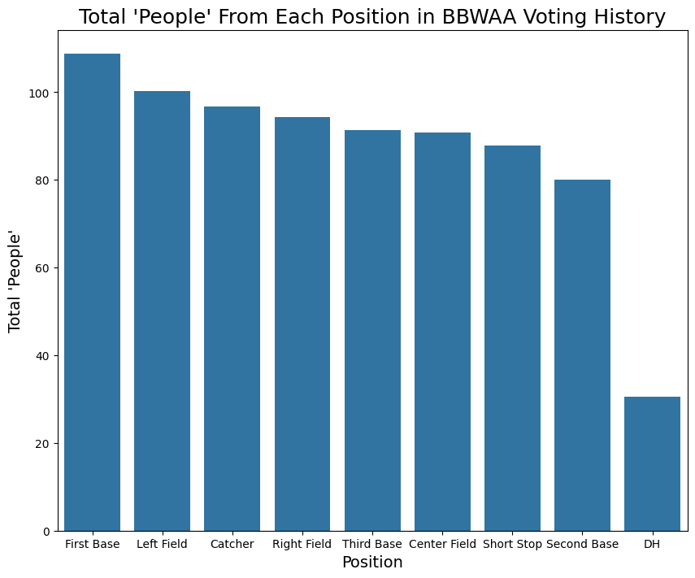
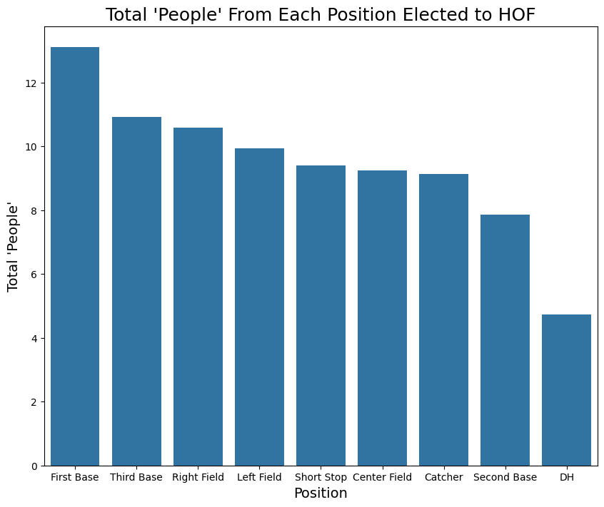
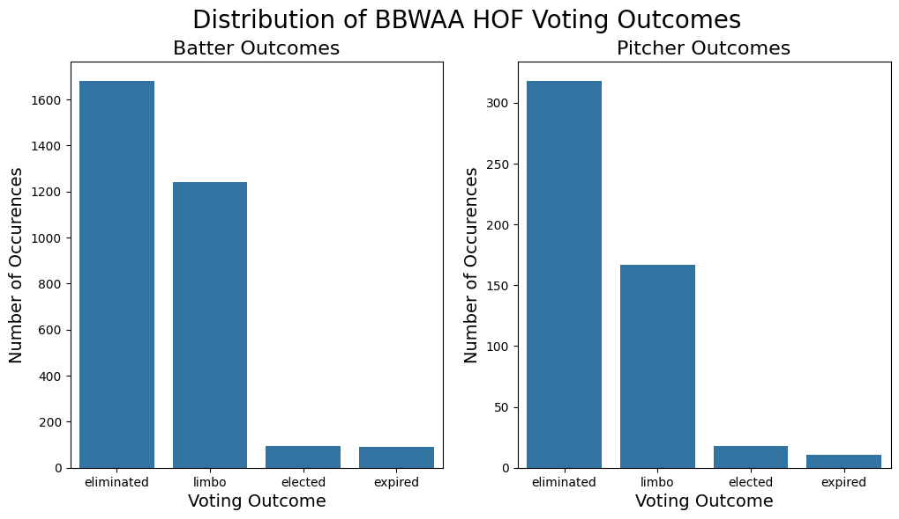
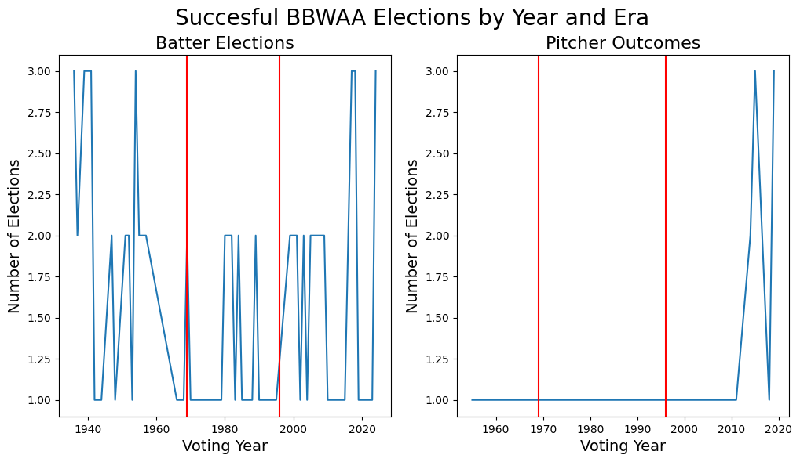
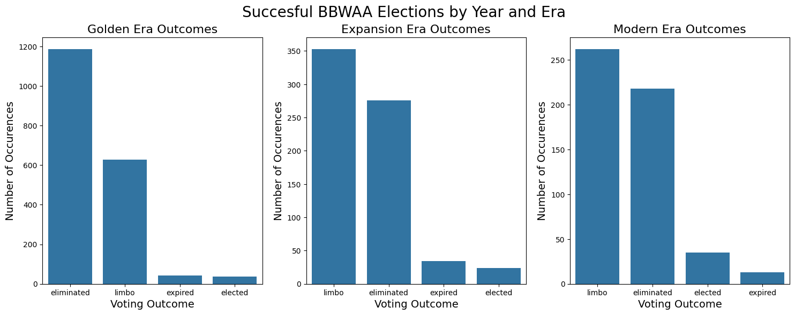
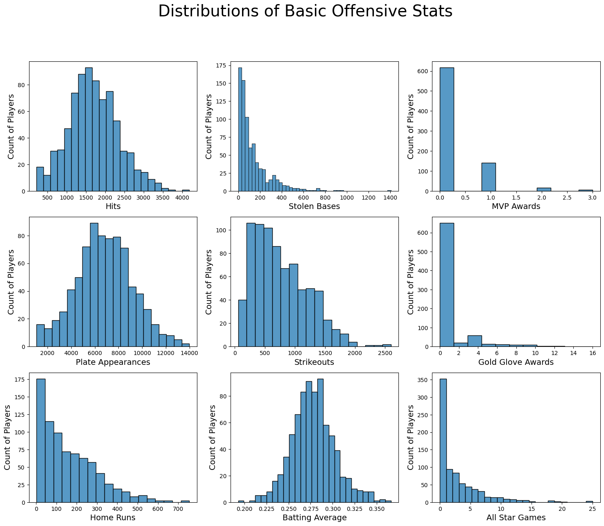
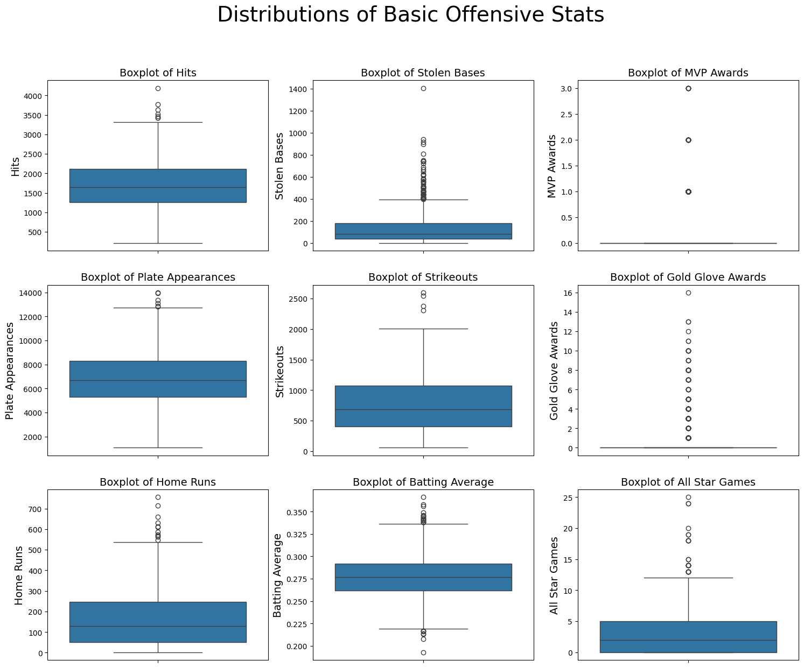
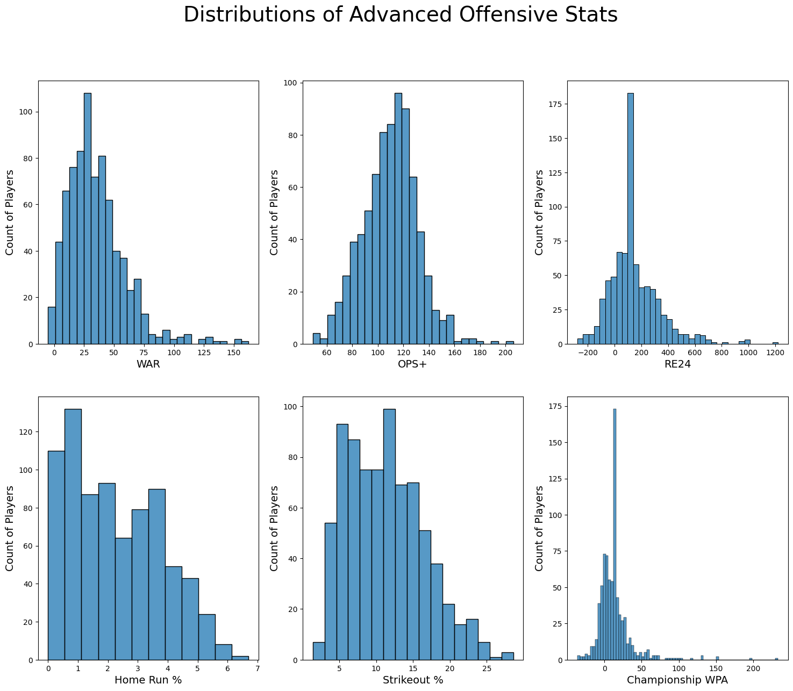
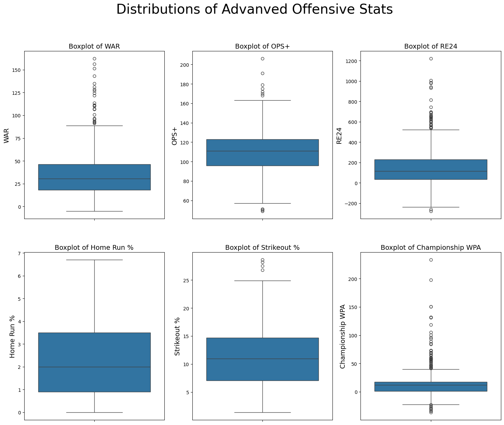
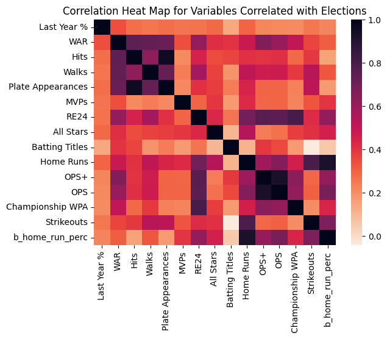

import pandas as pd
import numpy as np
import matplotlib.pyplot as plt
import seaborn as snsExploratory Data Analysis
Summary
Now that we have all of our final data, we can begin to explore and analyze the trends within! As a quick reminder, we have two datasets: one for pitchers and one for batters. We explore each below:
Code
We begin with our necessary imports.
# Read in the DataFrames
batter_df = pd.read_csv('../../data/processed-data/final_batter_df.csv')
pitcher_df = pd.read_csv('../../data/processed-data/final_pitcher_df.csv')General Overview
Batter DataFrame
print(f'The Batter DataFrame contains {batter_df.shape[0]} entries and {batter_df.shape[1]} features.')The Batter DataFrame contains 3108 entries and 38 features.batter_df.head()| name | player_id | voting_year | year_on_ballot | votes_pct | ly_votes_pct | outcome | position | scandal | b_war | ... | G_p_app | G_c | G_1b | G_2b | G_3b | G_ss | G_lf_app | G_cf_app | G_rf_app | G_dh | |
|---|---|---|---|---|---|---|---|---|---|---|---|---|---|---|---|---|---|---|---|---|---|
| 0 | Ty Cobb | cobbty01 | 1936 | 1 | 98.2 | 12.975208 | elected | batter | 0 | 151.4 | ... | 0.001013 | 0.0 | 0.004728 | 0.001013 | 0.000338 | 0.000000 | 0.012158 | 0.741304 | 0.239446 | 0.0 |
| 1 | Babe Ruth | ruthba01 | 1936 | 1 | 95.1 | 12.975208 | elected | batter | 0 | 162.2 | ... | 0.066449 | 0.0 | 0.013453 | 0.000000 | 0.000000 | 0.000000 | 0.428047 | 0.030575 | 0.461476 | 0.0 |
| 2 | Honus Wagner | wagneho01 | 1936 | 1 | 95.1 | 12.975208 | elected | batter | 0 | 131.0 | ... | 0.000718 | 0.0 | 0.090452 | 0.020818 | 0.075377 | 0.677674 | 0.012922 | 0.024408 | 0.097631 | 0.0 |
| 3 | Nap Lajoie | lajoina01 | 1936 | 1 | 64.6 | 12.975208 | limbo | batter | 0 | 106.9 | ... | 0.000000 | 0.0 | 0.117647 | 0.831699 | 0.008987 | 0.030229 | 0.002042 | 0.002042 | 0.007353 | 0.0 |
| 4 | Tris Speaker | speaktr01 | 1936 | 1 | 58.8 | 12.975208 | limbo | batter | 0 | 135.0 | ... | 0.000368 | 0.0 | 0.006620 | 0.000000 | 0.000000 | 0.000000 | 0.000736 | 0.989702 | 0.002574 | 0.0 |
5 rows × 38 columns
batter_df.info()<class 'pandas.core.frame.DataFrame'>
RangeIndex: 3108 entries, 0 to 3107
Data columns (total 38 columns):
# Column Non-Null Count Dtype
--- ------ -------------- -----
0 name 3108 non-null object
1 player_id 3108 non-null object
2 voting_year 3108 non-null int64
3 year_on_ballot 3108 non-null int64
4 votes_pct 3108 non-null float64
5 ly_votes_pct 3108 non-null float64
6 outcome 3108 non-null object
7 position 3108 non-null object
8 scandal 3108 non-null int64
9 b_war 3108 non-null float64
10 b_pa 3108 non-null int64
11 b_h 3108 non-null int64
12 b_hr 3108 non-null int64
13 b_sb 3108 non-null float64
14 b_bb 3108 non-null int64
15 b_so 3108 non-null float64
16 b_batting_avg 3108 non-null float64
17 b_onbase_plus_slugging 3108 non-null float64
18 b_onbase_plus_slugging_plus 3108 non-null int64
19 b_home_run_perc 3108 non-null float64
20 b_strikeout_perc 3108 non-null float64
21 b_base_on_balls_perc 3108 non-null float64
22 b_cwpa_bat 3108 non-null float64
23 b_baseout_runs 3108 non-null float64
24 mvps 3108 non-null int64
25 gold_gloves 3108 non-null int64
26 batting_titles 3108 non-null int64
27 all_stars 3108 non-null int64
28 G_p_app 3108 non-null float64
29 G_c 3108 non-null float64
30 G_1b 3108 non-null float64
31 G_2b 3108 non-null float64
32 G_3b 3108 non-null float64
33 G_ss 3108 non-null float64
34 G_lf_app 3108 non-null float64
35 G_cf_app 3108 non-null float64
36 G_rf_app 3108 non-null float64
37 G_dh 3108 non-null float64
dtypes: float64(22), int64(12), object(4)
memory usage: 922.8+ KBPitcher DataFrame
print(f'The Pitcher DataFrame contains {pitcher_df.shape[0]} entries and {pitcher_df.shape[1]} features.')The Pitcher DataFrame contains 514 entries and 46 features.pitcher_df.head()| name | player_id | voting_year | year_on_ballot | votes_pct | ly_votes_pct | outcome | position | scandal | p_war | ... | G_p_app | G_c | G_1b | G_2b | G_3b | G_ss | G_lf_app | G_cf_app | G_rf_app | G_dh | |
|---|---|---|---|---|---|---|---|---|---|---|---|---|---|---|---|---|---|---|---|---|---|
| 0 | Rube Waddell | wadderu01 | 1936 | 1 | 14.6 | 12.975208 | limbo | pitcher | 0 | 60.9 | ... | 0.997549 | 0.0 | 0.002451 | 0.000000 | 0.000000 | 0.000000 | 0.000000 | 0.000000 | 0.000000 | 0.0 |
| 1 | Rube Waddell | wadderu01 | 1937 | 2 | 33.3 | 14.600000 | limbo | pitcher | 0 | 60.9 | ... | 0.997549 | 0.0 | 0.002451 | 0.000000 | 0.000000 | 0.000000 | 0.000000 | 0.000000 | 0.000000 | 0.0 |
| 2 | Addie Joss | jossad01 | 1937 | 1 | 5.5 | 12.975208 | limbo | pitcher | 0 | 47.7 | ... | 0.969492 | 0.0 | 0.020339 | 0.000000 | 0.003390 | 0.000000 | 0.000000 | 0.006780 | 0.000000 | 0.0 |
| 3 | Clark Griffith | griffcl01 | 1937 | 1 | 2.0 | 12.975208 | eliminated | pitcher | 0 | 59.9 | ... | 0.945720 | 0.0 | 0.002088 | 0.002088 | 0.002088 | 0.008351 | 0.012526 | 0.010438 | 0.016701 | 0.0 |
| 4 | Theodore Breitenstein | breitte01 | 1937 | 1 | 0.5 | 12.975208 | eliminated | pitcher | 0 | 51.8 | ... | 0.853933 | 0.0 | 0.000000 | 0.000000 | 0.000000 | 0.000000 | 0.044944 | 0.035955 | 0.065169 | 0.0 |
5 rows × 46 columns
pitcher_df.info()<class 'pandas.core.frame.DataFrame'>
RangeIndex: 514 entries, 0 to 513
Data columns (total 46 columns):
# Column Non-Null Count Dtype
--- ------ -------------- -----
0 name 514 non-null object
1 player_id 514 non-null object
2 voting_year 514 non-null int64
3 year_on_ballot 514 non-null int64
4 votes_pct 514 non-null float64
5 ly_votes_pct 514 non-null float64
6 outcome 514 non-null object
7 position 514 non-null object
8 scandal 514 non-null int64
9 p_war 514 non-null float64
10 p_w 514 non-null int64
11 p_win_loss_perc 514 non-null float64
12 p_earned_run_avg 514 non-null float64
13 p_earned_run_avg_plus 514 non-null int64
14 p_g 514 non-null int64
15 p_gs 514 non-null int64
16 p_sho 514 non-null int64
17 p_sv 514 non-null int64
18 p_ip 514 non-null float64
19 p_so 514 non-null int64
20 p_whip 514 non-null float64
21 p_fip 514 non-null float64
22 p_strikeouts_per_base_on_balls 514 non-null float64
23 p_batting_avg 514 non-null float64
24 p_onbase_plus_slugging 514 non-null float64
25 p_home_run_perc 514 non-null float64
26 p_strikeout_perc 514 non-null float64
27 p_cwpa_def 514 non-null float64
28 p_baseout_runs 514 non-null float64
29 b_war 514 non-null float64
30 b_batting_avg 514 non-null float64
31 b_onbase_plus_slugging_plus 514 non-null float64
32 cy_youngs 514 non-null int64
33 gold_gloves 514 non-null int64
34 mvps 514 non-null int64
35 all_stars 514 non-null int64
36 G_p_app 514 non-null float64
37 G_c 514 non-null float64
38 G_1b 514 non-null float64
39 G_2b 514 non-null float64
40 G_3b 514 non-null float64
41 G_ss 514 non-null float64
42 G_lf_app 514 non-null float64
43 G_cf_app 514 non-null float64
44 G_rf_app 514 non-null float64
45 G_dh 514 non-null float64
dtypes: float64(28), int64(14), object(4)
memory usage: 184.8+ KBUnivariate Exploration
The first thing we explore is the distributions of our variables. Doing this will help us better understand what our data looks like, and begin opening the door to learning about the underlying relationships between data.
batter_df.describe()| voting_year | year_on_ballot | votes_pct | ly_votes_pct | scandal | b_war | b_pa | b_h | b_hr | b_sb | ... | G_p_app | G_c | G_1b | G_2b | G_3b | G_ss | G_lf_app | G_cf_app | G_rf_app | G_dh | |
|---|---|---|---|---|---|---|---|---|---|---|---|---|---|---|---|---|---|---|---|---|---|
| count | 3108.000000 | 3108.000000 | 3108.000000 | 3108.000000 | 3108.0 | 3108.000000 | 3108.000000 | 3108.000000 | 3108.000000 | 3108.000000 | ... | 3108.000000 | 3108.000000 | 3108.000000 | 3108.000000 | 3108.000000 | 3108.000000 | 3108.000000 | 3108.000000 | 3108.000000 | 3108.000000 |
| mean | 1968.241313 | 3.079472 | 13.897490 | 12.502669 | 0.0 | 40.513546 | 7227.393822 | 1853.312098 | 147.284106 | 146.179215 | ... | 0.000393 | 0.126806 | 0.140508 | 0.095212 | 0.108284 | 0.143917 | 0.118064 | 0.121499 | 0.125469 | 0.019848 |
| std | 24.179706 | 2.407836 | 20.684509 | 13.036454 | 0.0 | 20.859591 | 2148.175557 | 601.632900 | 128.187142 | 147.347957 | ... | 0.003130 | 0.319588 | 0.304927 | 0.259699 | 0.253916 | 0.318777 | 0.243584 | 0.260076 | 0.250164 | 0.074576 |
| min | 1936.000000 | 1.000000 | 0.000000 | 0.000000 | 0.0 | -5.100000 | 1076.000000 | 214.000000 | 2.000000 | 0.000000 | ... | 0.000000 | 0.000000 | 0.000000 | 0.000000 | 0.000000 | 0.000000 | 0.000000 | 0.000000 | 0.000000 | 0.000000 |
| 25% | 1949.000000 | 1.000000 | 0.600000 | 2.600000 | 0.0 | 26.000000 | 5765.250000 | 1424.750000 | 42.000000 | 49.000000 | ... | 0.000000 | 0.000000 | 0.000000 | 0.000000 | 0.000000 | 0.000000 | 0.000000 | 0.000000 | 0.000000 | 0.000000 |
| 50% | 1961.000000 | 2.000000 | 3.700000 | 12.975208 | 0.0 | 39.600000 | 7274.000000 | 1861.000000 | 105.000000 | 89.000000 | ... | 0.000000 | 0.000000 | 0.000816 | 0.000000 | 0.000468 | 0.000000 | 0.003868 | 0.000000 | 0.002167 | 0.000000 |
| 75% | 1986.000000 | 5.000000 | 18.125000 | 12.975208 | 0.0 | 54.200000 | 8749.000000 | 2299.000000 | 223.000000 | 181.000000 | ... | 0.000000 | 0.000000 | 0.050043 | 0.008734 | 0.039523 | 0.018703 | 0.084211 | 0.069869 | 0.078817 | 0.000000 |
| max | 2024.000000 | 9.000000 | 99.700000 | 74.800000 | 0.0 | 162.200000 | 13992.000000 | 4189.000000 | 755.000000 | 1406.000000 | ... | 0.066449 | 1.000000 | 1.000000 | 1.000000 | 1.000000 | 1.000000 | 0.995723 | 0.993541 | 0.982688 | 0.935426 |
8 rows × 34 columns
Position Analysis
We have seen that a majority of the dataset is batters over pitchers, but we can also look at the distribution of positions among batters who have made a BBWAA ballot. We do this by summing the columns for each position, in effect telling us the total number of ‘whole people’ who have played the position.
Code
position_cols = ['G_c', "G_1b", "G_2b", "G_3b", "G_ss", "G_lf_app", "G_cf_app", "G_rf_app", "G_dh"]
position_sums = batter_df.drop_duplicates(subset=['player_id'])[position_cols].sum().sort_values(ascending=False)
xlabels=["First Base", "Left Field", "Catcher", "Right Field",
"Third Base", "Center Field", "Short Stop", "Second Base",
"DH"]
ticks = [tick for tick in range(len(position_cols))]
plt.figure(figsize=(10,8))
sns.barplot(position_sums)
plt.ylabel("Total 'People'", fontsize=14)
plt.xlabel("Position", fontsize=14)
plt.title("Total 'People' From Each Position in BBWAA Voting History", fontsize=18)
plt.xticks(ticks=ticks, labels=xlabels);
We see above that there are a similar number of people at each position, other than designated hitter, who have recieved votes from the BBWAA process. Additionally, within the positions, First Base, Left Field and Right Field are among the highest tallies, which makes sense given they tend to require lower defensive skill. One surprise is that there are so many catchers, as I am of the ingoing impression that catchers are underrepresented in the Hall of Fame. We can check this assumption below, by looking at the distribution of inductees.
Code
position_cols = ['G_c', "G_1b", "G_2b", "G_3b", "G_ss", "G_lf_app", "G_cf_app", "G_rf_app", "G_dh"]
position_sums = batter_df[batter_df.outcome == 'elected'].drop_duplicates(subset=['player_id'])[position_cols].sum().sort_values(ascending=False)
xlabels=["First Base", "Third Base", "Right Field", "Left Field",
"Short Stop", "Center Field", "Catcher", "Second Base",
"DH"]
ticks = [tick for tick in range(len(position_cols))]
plt.figure(figsize=(10,8))
sns.barplot(position_sums)
plt.ylabel("Total 'People'", fontsize=14)
plt.xlabel("Position", fontsize=14)
plt.title("Total 'People' From Each Position Elected to HOF", fontsize=18)
plt.xticks(ticks=ticks, labels=xlabels);
Interestingly, we do see this assumptions confirmed in the data. While catchers make up a large portion of people nominated to a vote, they are the third least likely to achieve election. On the other hand, we see positions like Third Base jump up the list to 2nd in total elections.
Outcome Analysis
We next investigate the landscape of voting outcomes. Remember, there are three posibilities for a vote:
- The player recieves <5% of the possible vote and is eliminated
- The player recieves >75% of the vote and is elected
- The player revieces <75% of the vote but is in his final year of eligibility and expires
- The player revieces <75% of the vote but has more years of eligibility, so remains in ‘limbo’
Code
fig, ax = plt.subplots(1, 2, figsize=(12, 6))
plt.suptitle("Distribution of BBWAA HOF Voting Outcomes", fontsize=20)
# Plot the batter data
sns.barplot(batter_df.outcome.value_counts(), ax=ax[0])
ax[0].set_xlabel('Voting Outcome', fontsize=14)
ax[0].set_ylabel("Number of Occurences", fontsize=14)
ax[0].set_title("Batter Outcomes", fontsize=16)
# Plot the pitcher data
sns.barplot(pitcher_df.outcome.value_counts(), ax=ax[1])
ax[1].set_xlabel('Voting Outcome', fontsize=14)
ax[1].set_ylabel("Number of Occurences", fontsize=14)
ax[1].set_title("Pitcher Outcomes", fontsize=16)Text(0.5, 1.0, 'Pitcher Outcomes')
Here too, we see a few very important takeaways:
The distribution of voting outcomes changes over the course of the major eras. As we move throughout history, eliminations take a backseat role to limbos, meaning that in the first few attemps on the ballot, players were more likely to receive very low shares of the vote. Additionally, while still a very low total share, we do see the election share slowing rising. Recall however, that the overall number of elections is not increasing on an annual basis as evidence in the above line chart.
The total number of people/votes drastically decreases over time. This is likely caused by the creation of the BBWAA selection committee that determines the players on the ballot each year, and limits it to 40, which occured in 19681
Code
batter_elections = batter_df[batter_df.outcome == 'elected']
pitcher_elections = pitcher_df[pitcher_df.outcome=='elected']
batter_counts = batter_elections.groupby(by='voting_year').count().name
pitcher_counts = pitcher_elections.groupby(by='voting_year').count().name
fig, ax = plt.subplots(1, 2, figsize=(12, 6))
plt.suptitle("Succesful BBWAA Elections by Year and Era", fontsize=20)
# Plot the batter data
sns.lineplot(x=batter_counts.index, y=batter_counts.values, ax=ax[0])
ax[0].set_xlabel('Voting Year', fontsize=14)
ax[0].set_ylabel("Number of Elections", fontsize=14)
ax[0].set_title("Batter Elections", fontsize=16)
ax[0].axvline(x=1969, color='red')
ax[0].axvline(x=1996, color='red')
# Plot the pitcher data
sns.lineplot(x=pitcher_counts.index, y=pitcher_counts.values, ax=ax[1])
ax[1].set_xlabel('Voting Year', fontsize=14)
ax[1].set_ylabel("Number of Elections", fontsize=14)
ax[1].set_title("Pitcher Outcomes", fontsize=16)
ax[1].axvline(x=1969, color='red')
ax[1].axvline(x=1996, color='red')
Two things quickly become clear from the above charts:
Batter elections have always ranged between 0 and 3, but with no discernable increase/decrease on average over time. The Eras do not play a significant role in the number of elections.
There is missing data for pitchers from before just recently. This is likely caused by a systemic matching between the HTML changes that blocked 10% of scraped players and ~20% of scraped HOF votes in that HTML for pitchers before a certain year is changed. Becuase of this obvious data discrepancy, we will focus our future analysis solely on batters. Collection of this pitching data also presents itself as an area for future analysis, to ensure visibility and understanding of the position group!
Code
# Define the eras
golden_years = [year for year in range(1936, 1969)]
expansion_years = [year for year in range(1969, 1996)]
modern_years = [year for year in range(1996, 2025)]
# Define the batters and pitchers in the era
golden_batters = batter_df[batter_df.voting_year.isin(golden_years)]
expansion_batters = batter_df[batter_df.voting_year.isin(expansion_years)]
modern_batters = batter_df[batter_df.voting_year.isin(modern_years)]
fig, ax = plt.subplots(1, 3, figsize=(18, 6))
plt.suptitle("Succesful BBWAA Elections by Year and Era", fontsize=20)
# Plot the golden era data
sns.barplot(golden_batters.outcome.value_counts(), ax=ax[0])
ax[0].set_xlabel('Voting Outcome', fontsize=14)
ax[0].set_ylabel("Number of Occurences", fontsize=14)
ax[0].set_title("Golden Era Outcomes", fontsize=16)
# Plot the expansion era data
sns.barplot(expansion_batters.outcome.value_counts(), ax=ax[1])
ax[1].set_xlabel('Voting Outcome', fontsize=14)
ax[1].set_ylabel("Number of Occurences", fontsize=14)
ax[1].set_title("Expansion Era Outcomes", fontsize=16)
# Plot the modern era data
sns.barplot(modern_batters.outcome.value_counts(), ax=ax[2])
ax[2].set_xlabel('Voting Outcome', fontsize=14)
ax[2].set_ylabel("Number of Occurences", fontsize=14)
ax[2].set_title("Modern Era Outcomes", fontsize=16)Text(0.5, 1.0, 'Modern Era Outcomes')
We very quickly see that electio to the Hall of Fame is quite difficult, even if you are a player worthy enough of being selected to the ballot! For both pitchers and hitters, the most common occurence is elimination, quickly followed by limbo. For each position, elected players only represent <10% of the total voted body.
We wonder however, if this distribution, and general likelihoods have changed overtime and the game itself and potentially perspectevs on the Hall of Fame have changed. To do this, we split the history of baseball into 3 distinct categories there is often much discussion as to how the history of baseball should be split, with some views containing many more smaller eras, but sor simplicity, we group the timeline into three larger ones.
- The Golden Age (1936-1968)
- A contemporary era of baseball, filled with a number of all-time legends. During this era baseball explodes in popularity. The ‘balance of power’ shifts heavily towards pitchers near the end, resulting in a change to pitching mound dimensions to artifically increase offense league wide2.
- The Expansion Era (1969-1994)
- Beginning with the lowering of the mound, offense gradually increases throughout this era. Additionally, the leage expands on multiple occasions as the sport continues to increase in populatity3
- The Modern Era
- The Modern Era begins in 1995 when Major League Baseball breaks its strike, and popularity is fueled again by the home run races and doping scandals of the 1990s. The era continues into the modern day, where hitting for power, and throwing with maximum speed are emphasized, alongside a revolution of advanced scouting, training, and analysis4!
While many players have played across two eras, we will filter player/votes into the era belonging to the year of the vote, which represents the mindset of the BBWAA at the time of the vote.
We begin by plotting the number of elections over time, segmenting by era
Basic Primary Stats Analysis
We next turn our attention to some primary stats, for which we will plot simple distributions. The basic stats include:
- Hits
- Plate Appearances
- Home Runs
- Stolen Bases
- Strikeouts
- Career Batting Average
- MVP Awards Won
- Gold Gloves Won
- All-Star Games played in
basic_cols = [
['b_h', 'b_pa', 'b_hr'],
['b_sb', 'b_so', 'b_batting_avg'],
['mvps', 'gold_gloves', 'all_stars']
]
axes = [
[0,0], [0,1], [0,2],
[1,0], [1,1], [1,2],
[2,0], [2,1], [2,2]
]
x_labels = [
['Hits', "Plate Appearances", "Home Runs"],
["Stolen Bases", "Strikeouts", "Batting Average"],
["MVP Awards", "Gold Glove Awards", "All Star Games"]
]
fig, ax = plt.subplots(3,3,figsize=(18, 14))
plt.suptitle("Distributions of Basic Offensive Stats", fontsize=28)
for r in range(3):
for c in range(3):
sns.histplot(batter_df.drop_duplicates(subset='player_id')[basic_cols[r][c]].values, ax=ax[c,r])
ax[c,r].set_ylabel('Count of Players', fontsize=14)
ax[c,r].set_xlabel(f'{x_labels[r][c]}', fontsize=14)

All of basic offensive stats appears without error. The summative, non-negative stats are most all right-skewed, with the average stats, and stats all players accumulate ‘equally’ easily like Plate Appearences and WAR are all unomodial and semi-symetric. In a few of the plots, we do see some extremely high values, which we can investige further in a box plot.
basic_cols = [
'b_h', 'b_pa', 'b_hr',
'b_sb', 'b_so', 'b_batting_avg',
'mvps', 'gold_gloves', 'all_stars'
]
batter_df[basic_cols].describe().rename(columns={'b_h':"Hits", 'b_pa':"Plate Appearances", 'b_hr':"Home Runs",
'b_sb':'Stolen Bases', 'b_so':'Strikeouts', 'b_batting_avg':'Batting Average',
'mvps':'MVPs %', 'gold_gloves':"Gold Gloves", 'all_start':'All Star Games'})| Hits | Plate Appearances | Home Runs | Stolen Bases | Strikeouts | Batting Average | MVPs % | Gold Gloves | all_stars | |
|---|---|---|---|---|---|---|---|---|---|
| count | 3108.000000 | 3108.000000 | 3108.000000 | 3108.000000 | 3108.000000 | 3108.000000 | 3108.000000 | 3108.000000 | 3108.000000 |
| mean | 1853.312098 | 7227.393822 | 147.284106 | 146.179215 | 651.651223 | 0.287805 | 0.291184 | 0.757400 | 3.407336 |
| std | 601.632900 | 2148.175557 | 128.187142 | 147.347957 | 407.506545 | 0.024585 | 0.539248 | 2.026147 | 3.823610 |
| min | 214.000000 | 1076.000000 | 2.000000 | 0.000000 | 57.000000 | 0.193000 | 0.000000 | 0.000000 | 0.000000 |
| 25% | 1424.750000 | 5765.250000 | 42.000000 | 49.000000 | 353.000000 | 0.271000 | 0.000000 | 0.000000 | 0.000000 |
| 50% | 1861.000000 | 7274.000000 | 105.000000 | 89.000000 | 546.000000 | 0.287000 | 0.000000 | 0.000000 | 2.000000 |
| 75% | 2299.000000 | 8749.000000 | 223.000000 | 181.000000 | 842.500000 | 0.304000 | 1.000000 | 0.000000 | 6.000000 |
| max | 4189.000000 | 13992.000000 | 755.000000 | 1406.000000 | 2597.000000 | 0.366000 | 3.000000 | 16.000000 | 25.000000 |
basic_cols = [
['b_h', 'b_pa', 'b_hr'],
['b_sb', 'b_so', 'b_batting_avg'],
['mvps', 'gold_gloves', 'all_stars']
]
axes = [
[0,0], [0,1], [0,2],
[1,0], [1,1], [1,2],
[2,0], [2,1], [2,2]
]
x_labels = [
['Hits', "Plate Appearances", "Home Runs"],
["Stolen Bases", "Strikeouts", "Batting Average"],
["MVP Awards", "Gold Glove Awards", "All Star Games"]
]
fig, ax = plt.subplots(3,3,figsize=(18, 14))
plt.suptitle("Distributions of Basic Offensive Stats", fontsize=28)
for r in range(3):
for c in range(3):
sns.boxplot(batter_df.drop_duplicates(subset='player_id')[basic_cols[r][c]].values, ax=ax[c,r])
ax[c,r].set_title(f'Boxplot of {x_labels[r][c]}', fontsize=14)
ax[c,r].set_ylabel(f'{x_labels[r][c]}', fontsize=14)
Indeed, we do see a number of outliers, particularly in the data for different award, as well as stolen bases. However, what’s super interesting to consider, is that we must remember these are not ‘outliers’ in the typical sense of poor data generation. Rather, we know these events truly occured, and intead these are instances of likely unmatchable baseball greatness. Below, we outline those leaders in the awards categories and stolen bases, who truly separate themselves from the competition:
hits = batter_df.sort_values(by='b_h', ascending=False).iloc[0]
print(f"The leader in career Hits is {hits.loc['name']} with {hits.loc['b_h']} hits.")
sb = batter_df.sort_values(by='b_sb', ascending=False).iloc[0]
print(f"The leader in career Stolen Bases is {sb.loc['name']} with {int(sb.loc['b_sb'])} Stolen Bases.")
gold_gloves = batter_df.sort_values(by='gold_gloves', ascending=False).iloc[0]
print(f"The leader in Gold Glove Award Wins is {gold_gloves.loc['name']} with {gold_gloves['gold_gloves']} awards.")
mvps = batter_df.sort_values(by='mvps', ascending=False).iloc[0]
print(f"The leader in MVP Award Wins is {mvps.loc['name']} with {mvps['mvps']} awards.")
all_stars = batter_df.sort_values(by='all_stars', ascending=False).iloc[0]
print(f"The leader in All Star Games is {all_stars.loc['name']} with {all_stars['all_stars']} Games.")
The leader in career Hits is Ty Cobb with 4189 hits.
The leader in career Stolen Bases is Rickey Henderson with 1406 Stolen Bases.
The leader in Gold Glove Award Wins is Brooks Robinson with 16 awards.
The leader in MVP Award Wins is Jimmie Foxx with 3 awards.
The leader in All Star Games is Henry Aaron with 25 Games.After taking a moment to appreciate how utterly insane >4,000 hits and/or 25 All Star Games is, we move forward into new territory, taking a closer look at some of the more advanced metrics - many of which have only come into fashion in the last decade or two (although we have data dating back through history).
advanced_cols = [
['b_war', 'b_onbase_plus_slugging_plus', 'b_baseout_runs'],
['b_home_run_perc', 'b_strikeout_perc', 'b_cwpa_bat']
]
axes = [
[0,0], [0,1], [0,2],
[1,0], [1,1], [1,2],
]
x_labels = [
['WAR', "OPS+", "RE24"],
["Home Run %", "Strikeout %", "Championship WPA"]
]
fig, ax = plt.subplots(2,3,figsize=(18, 14))
plt.suptitle("Distributions of Advanced Offensive Stats", fontsize=28)
for r in range(2):
for c in range(3):
sns.histplot(batter_df.drop_duplicates(subset='player_id')[advanced_cols[r][c]].values, ax=ax[r,c])
ax[r,c].set_ylabel('Count of Players', fontsize=14)
ax[r,c].set_xlabel(f'{x_labels[r][c]}', fontsize=14)
We first notice in the chart above the large values appearing in our most advanced stats Championship WPA and RE24. Remember this is due to the imputing of these stats for players voted on before WWII, as the stats are not available on Baseball Reference until 1912. Other than this, all our charts appear as expected. Everything is either right skewed or mostly-semetric, and these align with the stats that are easier to accumulate for certain ‘types’ of players like power hitters, and stats that everyone can accumulate like OPS+.
- While today OPS tends to favor power hitting, for many decades in baseball, getting on base was favored over power, balancing this distribution out.
We also again see a few plots with significant ‘outliers’. See below for boxplots of each distribution and an explanation of some stat leaders.
advanced_cols = [
'b_war', 'b_onbase_plus_slugging_plus', 'b_baseout_runs',
'b_home_run_perc', 'b_strikeout_perc', 'b_cwpa_bat'
]
batter_df[advanced_cols].describe().rename(columns={'b_war':"WAR", 'b_onbase_plus_slugging_plus':"OPS+",
'b_saseout_runs':'RE24', 'b_home_run_perc':'Home Run %',
'b_strikeout_perc':'Strikeout %', 'b_cwpa_bat':"Championship WPA"})| WAR | OPS+ | b_baseout_runs | Home Run % | Strikeout % | Championship WPA | |
|---|---|---|---|---|---|---|
| count | 3108.000000 | 3108.000000 | 3108.000000 | 3108.000000 | 3108.000000 | 3108.000000 |
| mean | 40.513546 | 113.021879 | 180.376155 | 1.959781 | 8.965991 | 20.227928 |
| std | 20.859591 | 20.891943 | 180.729055 | 1.490449 | 4.479540 | 25.795460 |
| min | -5.100000 | 49.000000 | -277.190000 | 0.000000 | 1.400000 | -53.600000 |
| 25% | 26.000000 | 99.000000 | 83.260000 | 0.700000 | 5.700000 | 6.400000 |
| 50% | 39.600000 | 115.000000 | 122.940000 | 1.500000 | 7.900000 | 15.100344 |
| 75% | 54.200000 | 127.000000 | 293.310000 | 3.200000 | 11.500000 | 28.000000 |
| max | 162.200000 | 206.000000 | 1219.800000 | 6.700000 | 28.600000 | 233.300000 |
advanced_cols = [
['b_war', 'b_onbase_plus_slugging_plus', 'b_baseout_runs'],
['b_home_run_perc', 'b_strikeout_perc', 'b_cwpa_bat']
]
axes = [
[0,0], [0,1], [0,2],
[1,0], [1,1], [1,2],
]
x_labels = [
['WAR', "OPS+", "RE24"],
["Home Run %", "Strikeout %", "Championship WPA"]
]
fig, ax = plt.subplots(2,3,figsize=(18, 14))
plt.suptitle("Distributions of Advanved Offensive Stats", fontsize=28)
for r in range(2):
for c in range(3):
sns.boxplot(batter_df.drop_duplicates(subset='player_id')[advanced_cols[r][c]].values, ax=ax[r,c])
ax[r,c].set_title(f'Boxplot of {x_labels[r][c]}', fontsize=14)
ax[r,c].set_ylabel(f'{x_labels[r][c]}', fontsize=14)
war = batter_df.sort_values(by='b_war', ascending=False).iloc[0]
print(f"The leader in career WAR is {war.loc['name']} with {war.loc['b_war']} WAR.")
ops = batter_df.sort_values(by='b_onbase_plus_slugging_plus', ascending=False).iloc[0]
print(f"The leader in career OPS+ is {ops.loc['name']} with an {ops.loc['b_onbase_plus_slugging_plus']} OPS+.")
wpa = batter_df.sort_values(by='b_cwpa_bat', ascending=False).iloc[0]
print(f"The leader in career Championship WPA is {wpa.loc['name']} with a Championship WPA of {wpa.loc['b_cwpa_bat']}.")The leader in career WAR is Babe Ruth with 162.2 WAR.
The leader in career OPS+ is Babe Ruth with an 206 OPS+.
The leader in career Championship WPA is Mickey Mantle with a Championship WPA of 233.3.Even though we took a quick pause to admire some of the leaders in our basic stats earlier, another much more serious pause is required here to fully understand/comprehend/appreciate one the points listed above. That is the fact that Micky Mantle has a career Championship WPA value of 233.3, or 2.33 Championships.
For those still unfamiliar with WPA and/or Championship WPA, the general calculations as follows:
- For any given state in a baseball game, (The inning, score, number of outs, number of men on base, etc), the expected win probability for a team can be calculated.
- After any plate appearance, the game state changes, and therefore the expected win probability too, changes.
- For an individual batter, the difference in his team’s win percentage before and after the plate appearance is the ‘Win Probability Added’ (WPA) of the plate appearance.
- This value can be positive OR negative, and is summative across plate appearances for the batter over his career.
- The stat is utilized because it captures the difference in the same plate appearance outcomes (eg. single, double, HR) in different game situations. For example, a HR is more impactful when tied in the 9th inning than in the top of the 1st.
- The stat can be extrapolated to championship WPA (cWPA) which looks at the difference of winning the league championship before and after each plate appearance.
- This means that with a cWPA value of 2.33, Micky Mantle’s plate appearences individually accounted for >2 league championships.
- For context, this would be exivilant to hitting a walk off grandslam down 3, in game 7 of the league champiionship series not once… not twice… BUT NEARLY 3 TIMES!
Baseball nerding aside, we’ve now gained a much deeper understanding of the data collected, how their underlying distributions look, and are now ready to move forward into looking at how different variable interact with one another, particularly in their relationship to being elected on a given ballot.
Bivariate Analysis
One of the critical factors in understanding what it takes to become sucessfully elected to the Hall of Fame us learning what correlates with a succesfull election. To do this, we create a new piece of data, which is a binary True/False of whether each player/year was succesfully elected.
is_elected = batter_df.outcome == 'elected'With this information, we calculate the correlation of all our numeric data, to the is_elected data, showing which variables are most tied to it. We highlight the top 15 below.
numeric_data = batter_df.select_dtypes(include=np.number).drop(columns='votes_pct')
top_corr_values = abs(numeric_data.apply(lambda x: x.corr(is_elected))).sort_values(ascending=False).iloc[:15].index
numeric_data.apply(lambda x: x.corr(is_elected))[list(top_corr_values)]/Users/jaredzirkes/pyvenv/lib/python3.10/site-packages/numpy/lib/function_base.py:2897: RuntimeWarning: invalid value encountered in divide
c /= stddev[:, None]
/Users/jaredzirkes/pyvenv/lib/python3.10/site-packages/numpy/lib/function_base.py:2898: RuntimeWarning: invalid value encountered in divide
c /= stddev[None, :]ly_votes_pct 0.343455
b_war 0.336836
b_h 0.247155
b_bb 0.243037
b_pa 0.239091
mvps 0.226508
b_baseout_runs 0.224341
all_stars 0.224072
batting_titles 0.220762
b_hr 0.218491
b_onbase_plus_slugging_plus 0.182623
b_onbase_plus_slugging 0.173466
b_cwpa_bat 0.168514
b_so 0.163700
b_home_run_perc 0.129216
dtype: float64Not suprisingly, we see that stats like WAR, hits, and plate appearences are in the top few strongest correlated stats with a succesful election. What’s great to see however, is the inclusion of last years voting percent as the single strongest correlation. This is especially true given the face that any player who was elected their first time on the ballot has just the average imputed.
While the year itself does not appear a strong correlator to outcome, we do also wonder if there are differences in the important stats throughout the eras. For example, do more modern players have a strong correlation for the advanced metrics that have become popular in recent years? To test this, we exclude the batters voted on before 1946, as we have systematically imputed some of their advanced metrics.
numeric_cols = batter_df.select_dtypes(include=np.number).drop(columns='votes_pct').columns
with np.errstate(invalid='ignore', divide='ignore'): # Some Nan values with throw errors in the calculation, so we supress the warning
golden_numeric_stats = golden_batters[numeric_cols][golden_batters.voting_year > 1946]
expansion_numeric_stats = expansion_batters[numeric_cols]
modern_numeric_stats = modern_batters[numeric_cols]
golden_values = abs(golden_numeric_stats.apply(lambda x: x.corr(is_elected))).sort_values(ascending=False).index
expansion_values = abs(expansion_numeric_stats.apply(lambda x: x.corr(is_elected))).sort_values(ascending=False).index
modern_values = abs(modern_numeric_stats.apply(lambda x: x.corr(is_elected))).sort_values(ascending=False).index
golden_top_corr = golden_numeric_stats.apply(lambda x: x.corr(is_elected))[list(golden_values)]
expansion_top_corr = expansion_numeric_stats.apply(lambda x: x.corr(is_elected))[list(expansion_values)]
modern_top_corr = modern_numeric_stats.apply(lambda x: x.corr(is_elected))[list(modern_values)]
corr_over_time = pd.concat([golden_top_corr, expansion_top_corr, modern_top_corr], axis=1).sort_values(by=2, ascending=False)
corr_over_time['modern_vs_golden'] = corr_over_time[2] - corr_over_time[0]
corr_over_time.sort_values(by='modern_vs_golden', key=lambda x: x.abs(), ascending=False).rename(columns={0:'Golden Era', 1:'Expansion Era', 2:'Modern Era'})[:15]| Golden Era | Expansion Era | Modern Era | modern_vs_golden | |
|---|---|---|---|---|
| all_stars | 0.140028 | 0.353182 | 0.347278 | 0.207251 |
| b_war | 0.201308 | 0.415799 | 0.371876 | 0.170569 |
| b_h | 0.136922 | 0.263467 | 0.297544 | 0.160622 |
| b_pa | 0.120326 | 0.290315 | 0.273114 | 0.152788 |
| b_sb | -0.007428 | 0.133418 | 0.118030 | 0.125458 |
| ly_votes_pct | 0.393950 | 0.169242 | 0.271136 | -0.122813 |
| b_home_run_perc | 0.122508 | 0.185753 | 0.003475 | -0.119033 |
| b_strikeout_perc | 0.007663 | 0.078378 | -0.092373 | -0.100036 |
| mvps | 0.210967 | 0.316709 | 0.110996 | -0.099972 |
| gold_gloves | -0.004902 | 0.167792 | 0.084601 | 0.089503 |
| voting_year | -0.055510 | 0.012471 | 0.032902 | 0.088412 |
| G_3b | -0.014429 | 0.010993 | 0.073817 | 0.088246 |
| G_1b | 0.040169 | -0.006717 | -0.039486 | -0.079655 |
| G_rf_app | 0.010877 | 0.008763 | -0.065831 | -0.076707 |
| b_bb | 0.146704 | 0.342679 | 0.218379 | 0.071676 |
Here we see some pretty suprising results. In the right hand column, which represents the total difference in the correlation between the modern era and the golden era, we do not see any of our advanced metrics present, other than OPS/OPS+ which actually has a negative value!
Beyond this, there is also a very large negative value for the prior years vote percentage. This is a bit confusing to explain, but may be in part due to the shrinking ballots explained earlier, and a stronger likelihood of being elected on the first ballot, which again has an imputed value.
We also observe that in the modern era, this is almost no correlation between MVP and a succesful election. This is likely due to the vast number of MVP awards won by players like Barry Bonds who are not in the Hall of Fame for scandal reasons.
In total, given the intresting nature of these results, there is not a major reason to suspect that in predicting ballot outcomes it is necessary to stratify features by time frame. While this may give a slight general increase in accuracy, there are no clearcut methods for doing so like adding in advanced stats for later years, other than arbitrarity filtering based on the above values, which may result in overfitting our model and decreasing accuracy on unseen future data.
As a final check, we go back to our top 15 variables most correlated with a succesful election, and build a heatmap outlining the matrix of correlations between each pair of variables. This will help us learn if our variables are strongly correlated with one another, which may lead to issues down the road during predicion model building.
most_correlated_df = batter_df[top_corr_values].copy()
most_correlated_df = most_correlated_df.rename(columns={
'ly_votes_pct':"Last Year %",
'b_war':'WAR',
'b_h':'Hits',
'b_pa':'Plate Appearances',
'b_bb':'Walks',
'batting_titles':'Batting Titles',
'all_stars':'All Stars',
'b_baseout_runs':'RE24',
'b_hr':"Home Runs",
'mvps':'MVPs',
'b_onbase_plus_slugging_plus':'OPS+',
'b_onbase_plus_slugging':'OPS',
'b_cwpa_bat':"Championship WPA",
'b_so':'Strikeouts',
'b_batting_avg':'Batting AVG'
})sns.heatmap(most_correlated_df.corr(), cmap='rocket_r')
plt.title("Correlation Heat Map for Variables Correlated with Elections")Text(0.5, 1.0, 'Correlation Heat Map for Variables Correlated with Elections')
There is a fair amount of correlation between the variables, which makes sense given we chose a number of different stats that we expect to correlate with with ‘great’ MLB players. Thus they all represent the same underlying strength as a baseball player. However, there are only two immediete pairs of variables that stand out as having problematic corrlations. In the darkest squares, we see the OPS and OPS+, as well as plate appearances and hits have nearly perfect (1) correlations. Because of these strong correlation, which effectivley duplicate the ‘information’ in our data, we make two decisions:
- We drop OPS from the dataset, as OPS+ is nearly identical but with the added benefit of relative context to other players
- We drop Plate Appearances from the dataset. We chose PA over Hits becuase PA is less correlated with the election outcome.
batter_df = pd.read_csv('../../data/processed-data/final_batter_df.csv')
batter_df = batter_df.drop(columns = ['b_pa', 'b_onbase_plus_slugging'])
batter_df.to_csv('../../data/processed-data/batter_df_for_prediction', index=False)Conclusion
Now that we have thoroughly explored our data we have a much better understand of how it works, and what may or may not be necessary as we move forward into the modeling stage. We know:
- Data for pitchers is systematically missing, and we will move forward with predicting batter elections
- Position played has a direct impact on voting outcomes, and we should include it in our dataset
- While the era of the election has an impact on the share of succesful elections, it does not on the actual number of elections, a result of shrinking ballot sizes rather than true impact of year.
- Where the year does make some impact is when considering what variables correlate with succesfull elections. While some of the underlying variables impact may not make intuitive sense, we do see some changes in correlations over time.
- There is a fair amount of correlations between our features, due to them all representing being good at baseball. We’ve removed some variables with problematically high correlation like OPS and Plate Appearances, but may need to consider dimensionality reduction in future steps.
With all this new information in hand, we move forward onto our modeling phase, where we begin clustering our players to see if patterns emerge visually in Hall of Fame caliber careers.
References
1.
BBWA. BBWA Voting Rules History.
2.
Contributers, W. Golden Age of Baseball. (2024).
3.
Bullpen, B. Expansion.
4.
Contributers, W. History of Baseball in the United States. (2024).